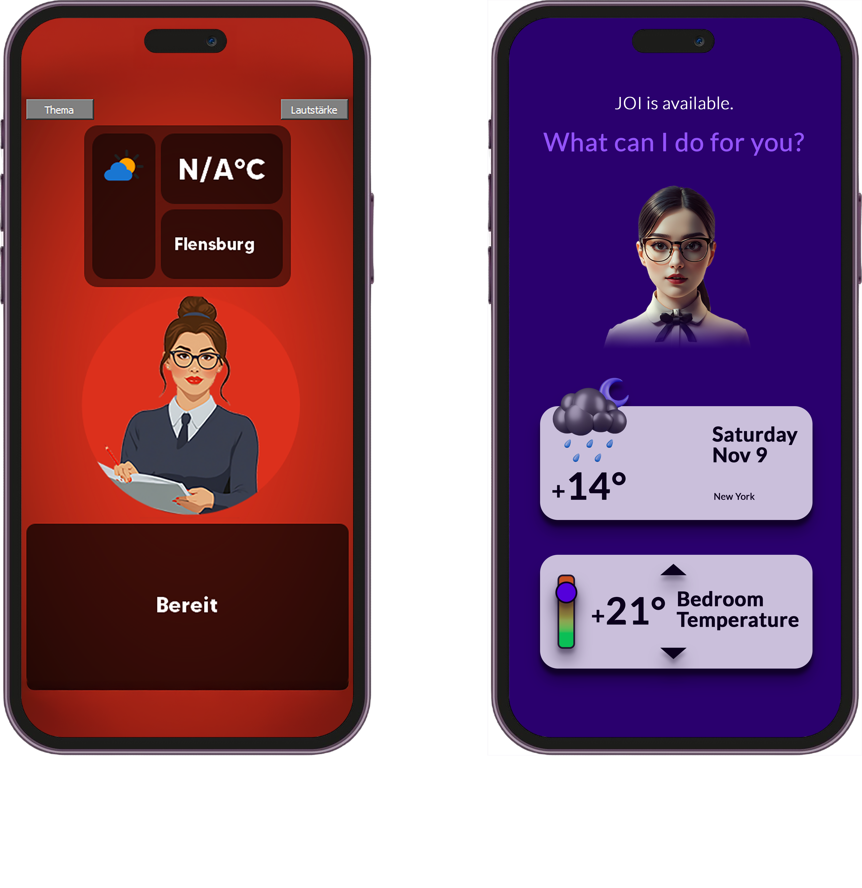

Changelog
Track JOI's latest progress and features!
- Improved Weather Forecast Functionality: Integrated a 3-day weather forecast using the Open-Meteo API. Added German formatting for better local clarity. Enhanced prompts to guide AI models in analyzing the forecast effectively.
-
Application Restart Functionality:
Implemented a robust restart mechanism for the application
using
os.execv. Added error handling to manage potential restart issues gracefully. - Loading Animation Improvements: The loading animation now runs seamlessly and triggers speech handling after 5 seconds for better synchronization.
- Fallback Response Enhancements: Improved handling of fallback responses, ensuring that the application dynamically responds to incomprehensible commands while maintaining UI consistency.
- PyQt Signal Enhancements: Refined PyQt signal mechanisms to ensure real-time UI updates and synchronization during speech processing and loading animations.
- Code Refinements: Improved modularity and error handling across several features. Enhanced UI updates with PyQt signals to maintain consistency.
-
Improved UI Design and Layout:
Redesigned the user interface to enhance usability and
aesthetics:
- Optimized the layout for better accessibility, ensuring clear navigation and responsive design across devices.
- Improved color contrast to align with accessibility standards, ensuring a better experience for visually impaired users.
- Simplified interaction patterns, reducing cognitive load for users by creating a more intuitive experience.
-

A comparison of the UI design before and after the improvements in November 2024.
- Debugging and Testing: Verified weather forecast, application restart, fallback responses, and loading animation integration for smooth functionality.
- Added voice-interruption feature allowing the wakeword to be used anytime.
- Integrated real-time conversation processing with Ollama AI model for seamless interaction.